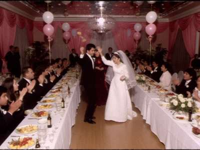

|
NEW!!! 2004 - DVD + two cameras + crane shot
Your toi is the most important day. In twenty years you will not remember what you ate, but you will watch your video
with your grandchildren. Don't trust it to your nephew with his small camera! Chyngyz Video films your toi like a real film:
two cameras, professional light, wireless microphone for the toastmaster, and montage on computer with effects and music.

Frame from our video, toi of Azamat and Gulzada, "Ak Bermet" toikana, September 2004
WHAT WE FILM
- Kyz uzatuu — seeing off the bride at her parents' house (in the morning, with the elechek and the koshok songs)
- Toi — the wedding feast in the toikana, all night
- Nike — in the mosque, or the church service (we film in St. Yuhanna and in the Cathedral with the priest's permission)
- Walk — photos and video at the Central City Park, the Hippodrome, by the river
- Sünnöt toi, jubilees (60, 70 years), beshik toi, graduation, funerals (with respect, one camera, no music)
- Clip — your love story with a song, filmed before the wedding. Very popular!
PRICES 2004
| Package | What you get | Price |
| "Standard" | 1 camera, toi only (up to 6 hours), simple montage, 2 VHS cassettes | 400 som / $80 |
| "Gold" | 1 camera, kyz uzatuu + walk + toi, montage with effects and titles, 2 VHS or 2 VCD + 1 copy for parents | 650 som / $130 |
| "Royal" | 2 cameras + crane, everything from morning to night, clip with song, full montage, DVD in a box with your photo, 5 copies | 1,100 som / $220 |
| Extra copy | VHS / VCD / DVD | 15 / 15 / 25 som |
| Old cassettes to VCD | your old family videos copied to disc before the tape dies | 20 som per hour |
Outside Talas: + transport. Semiz, Kara-Oi, air base villages no extra. Book 1 month before, in September and October 2 months
(toi season!). Deposit 30%.
OUR EQUIPMENT
Cameras Panasonic and Sony (digital, mini-DV), lights, wireless microphones, crane 3 metres, computer montage (Pentium 4, Adobe
Premiere, 120 GB). We know the toi, we don't stand in front of the guests and we don't go home at midnight.
REVIEWS
"Thank you Chyngyz! My mother cried three times watching the video. Very beautiful clip." — Aizhan, Talas
"Professional work. Recommend." — family Lysenko, Nurzhan
"We ordered the DVD for relatives in Chicago, they said it is better than American weddings." — Bakyt aga
CONTACT
Chyngyz Sadyrov
Studio: Communications Square, the house of everyday services (Dom Byta), 2nd floor, room 14
Tel. 2-55-03-19, mobile 0555 71 40 19
chyngyz_video@attelkom.net
Every day 10-18, toi days by phone only.
Мы говорим по-русски.
|